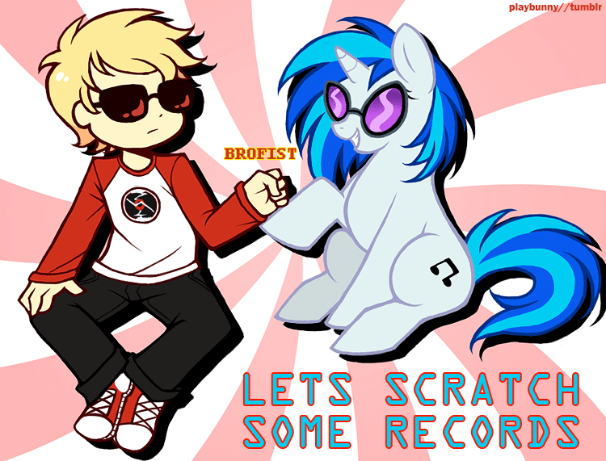
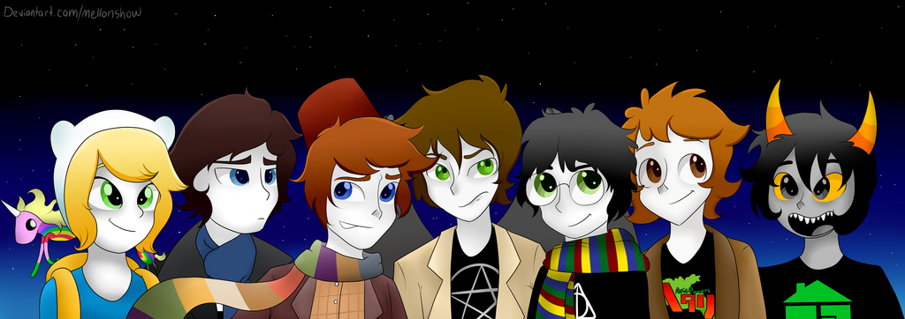

Menu:
About Me
My Projects
Contact
My name is Linda Khalaf, and I am a fifteen year old second year currently attending Pasadena Highschool in California.
My dream job is to be a webdeveloper/designer, or an aerospace engineer, currently I am undeciced.
My hobbies are watching my favorite shows, reading comics, writing, and building/programming robots.

